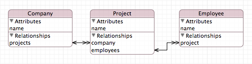

Please note: this article is part of the older "Objective-C era" on Cocoa with Love. I don't keep these articles up-to-date; please be wary of broken code or potentially out-of-date information. Read "A new era for Cocoa with Love" for more.
Performance tests: Replacing Core Data Key Paths
In Mac OS X 10.5, Core Data switched from using valueForKey: as the recommended way to access Core Data attributes and relationships to auto-generated accessor methods. This new approach is faster for fetching values but lacks NSKeyValueCoding's ability to coalesce the values extracted from every object in a "to-many" relationship in a single statement.
In this post, I'll look at replacing the NSSet traversal and NSSet coalescing abilities offered by NSKeyValueCoding with an approach that invokes accessor methods directly to see if I can bring some of the performance improvement of auto-generated accessor methods to situations involving NSSet traversals.
Accessing the attributes and relationships of an NSManagedObject
In this post, I'll look at performance in a Core Data program using the following model:
If you're not familiar with Core Data entity diagrams, the important point here is that every Company can have multiple Projects and every Project can have multiple Employees
Given this model, if I have a pointer, aCompany, which points to one of the Company objects, getting the company's name is straightforward:
NSString *companyName = aCompany.name;
The name property accessed here is implemented in an auto-generated accessor method that NSManagedObject provides for us.
Before Mac OS X 10.5, the only way of accessing values in Core Data was using key value coding:
NSString *companyName = [aCompany valueForKey:@"name"];
Why was the change away from key value coding made? The main reason was performance (although improved syntax and type-safety also helped). Fetching the name one million times using key value coding takes 0.284016 seconds but using the auto-generated property accessor method this drops to 0.109017 seconds — 2.6 times faster.
Set traversal
But key-value coding (the "old" method) still has one important advantage over the auto-generated methods: it's quicker when traversing a set returned from a 'to-many' relationship.
For example, if I want to get the full set of Project names used by aCompany it is easy with Key Value Coding:
NSSet *projectNames = [aCompany valueForKeyPath:@"projects.name"];
This works because the NSSet implementation of the NSKeyValueCoding protocol automatically traverses into itself to get the names for each Project object it contains.
Using the accessor methods, the naïve equivalent would be:
NSMutableSet *result = [NSMutableSet set];
for (Project *project in aCompany.projects)
{
NSString *name = project.name;
if (value)
{
[result addObject:value];
}
}
Not only is this more code than the key value coding approach but it is actually slower. For 10,000 Company objects, each with 100 Project objects, the key value coding approach took 0.25692 seconds and the naïve approach using auto-generated accessors took 0.52873 seconds.
The new and improved approach has gone from 2.6 times faster to 2 times slower.
Fixing the speed problems
The old method got faster
Before I get to why the "new" method was slower, the first point to notice is that the key value coding approach (the "old" approach) was actually faster when using set traversal. Despite the extra work involved in traversing from the Company to the Project and uniquing the names to form a single NSSet, the key value coding took just 0.25692 seconds to fetch one million Project names, down from the 0.284016 seconds to fetch one million Company names.
This isn't a glitch; despite more work involved, Key Value Coding improves its performance when sets are iterated internally (as part of the key path) rather than externally (as I did when iterating over one million Company objects).
Despite its improvements, we should still be able to beat Key Value Coding with our approach using the auto-generated accessor methods but the margin is obviously going to be a lot closer than it was for the aCompany.name iteration..
Fixing the new method
Basic profiling quickly reveals that the problems here have little to do with the actual property accessors. The slow speed is primarily due to addObject:
After looking at the private methods on the stack in the profiler, it became clear that the reason was reallocation. Every time the NSMutableSet needed to grow in size, it was reallocating its internal storage, resulting in the poor performance.
We can pre-allocate the entire set based on the worst-case size (all Project names unique). The code then becomes:
NSSet *projects = aCompany.projects;
NSMutableSet *result = [NSMutableSet setWithCapacity:[projects count]];
for (Project *project in projects)
{
NSString *name = project.name;
if (value)
{
[result addObject:value];
}
}
Success! This version now runs in 0.19104 seconds (down from 0.52873 seconds) and is now 25% faster than the key value coding approach.
We're no longer 2.6 times faster but NSSet's internal implementation of Key Value Coding has some advantages over us here: since it has internal access to the storage, it can optimize the iteration over the "to-many" relationship and the building of the new set more than we can.
A category implementation
To reuse the above approach in future, we can implement a category on NSSet.
There will be two methods:
objectValuesForProperty:coalescedValuesForProperty:
The first will implement the previously mentioned example (where the NSSet contains basic objects).
The second will replicate the Key Value Coding operator @distinctUnionOfSets (to handle the case where the NSSet contains an NSSet and you need to coalesce the objects inside the child sets).
An example of this second case is getting all the Employee objects at a Company. In Key Value Coding we would write:
NSSet *allEmployees = [aCompany valueForKeyPath:@"projects.@distinctUnionOfSets.employees"];
With the coalescedValuesForProperty: method, we could write:
NSSet *allEmployees = [aCompany.projects coalescedValuesForProperty:@selector(employees)];
The implementation is then:
#import <objc/message.h>
@implementation NSSet (PropertyCoalescing)
- (NSSet *)objectValuesForProperty:(SEL)propertySelector
{
NSMutableSet *result = [NSMutableSet setWithCapacity:[self count]];
for (id object in self)
{
id value = objc_msgSend(object, propertySelector);
if (value)
{
[result addObject:value];
}
}
return result;
}
- (NSSet *)coalescedValuesForProperty:(SEL)propertySelector
{
NSInteger count = 0;
for (id object in self)
{
count += [objc_msgSend(object, propertySelector) count];
}
NSMutableSet *result = [NSMutableSet setWithCapacity:count];
for (id object in self)
{
id value = objc_msgSend(object, propertySelector);
if (value)
{
[result unionSet:value];
}
}
return result;
}
@end
With the coalescedValuesForProperty: method we iterate over the whole set twice to get the size but this remains the fastest option — in fact, this method is about 35% faster than the Key Value Coding approach compared to objectValuesForProperty:'s 25% improvement.
Conclusion
By request, here's the code used in the testing: PropertyAccessors.zip (32kB). It's hastily thrown together to accompany this post, so it's not necessarily well written but it's there if you're interested.
I wrote this code and ran these performance tests because I have a lot of code that uses Key Value Coding for traversing "to-many" relationships. I was concerned that since Core Data advocates the use of the auto-generated accessor methods for performance reasons, that my use of key value coding in these cases would be significantly slower than it should be.
The result is that while it is possible to improve upon the performance of Key Value Coding for traversing sets in Core Data, the improvement is only 25-35%, not the 260% improvement from replacing Key Value Coding for individual property access. Key Value Coding is quite efficient when dealing with sets — certainly more efficient than it is when accessing single properties.
Of course, the 35% speed improvement offered by the approach presented here will certainly be beneficial in performance critical areas.
With regards to the implementation itself: never underestimate the performance impact of keeping memory reallocations at a minimum. Starting with a zero capacity NSSet and continually growing it using addObject: was 3 times slower than allocating once.
The capacity of the NSMutableSet allocated is large enough to hold all objects but if the objects are not all unique, this will be bigger than required. If this extra memory usage is a concern, you can copy the set once it is generated. The copy will be only as big as strictly required and you can release the original. The drawback is that this copying process will add another 10-15% onto the time taken.
A drop-in fix for the problems with NSHost